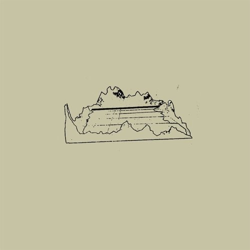

Tere, its been a whole, hope you been well 3. Tbh I thought I would have broken soner and sent something. The "vacations" didn't start very well, plus my brain pacing back and forward around the room having this "conversation" in my head over and over and ofc I feel into the old habit of sleeping whole day and awake whole night. But I decided to wait and told myself I would only say something until I pulled myself out of it, with the deadline being your bday bc I rly want to say something idk... so also Happy birthday although u might be seeing this the day after. But yeah I started working out again and cooking which I stoped, I was doing rly good on both, and I'm also sleeping right again, and I'm putting breaks on weed, maybe who knows here and there but yeah idk I feel like I am doing too much and expecially this time, no it needs to end. If it was only here and there but I did abuse it while I was here in the Netherlands and its gotta stop. Apart from that, there was an insident where the radiator broke and water everywhere and no heating for no one, thankfully fixed the day after (not my fault, poor instalation), and I guess i went out once or twice with a neighbour for lunch\dinner and for drinks with some collegues and thats it, rest is lots of stress bc of moving and all that...
About us, I know there isnt much left to say, most if not all has already been said, but tbh between everything reminding me of you or just me thinking of you a day hasnt gone by that I didnt think of you, I rly care about you and you are rly important to me. And I know I have all my flaws, not remembering things or getting heating and raising my voice and saying things I shouldn't and the list goes on, but I rly do believe we can work together and that there is a path for it. For a while and this is even before the breakup, it felt like you gave up or just built a wall, but at some point we stopped calling and video calls, then slowly the pictures and videos of ourselves, and the gaming and slowly it became mostly text and when we already in a long distance these things matter that much more, sometimes weeks or what it felt like a month/s without seeing each other or hearing each other, maybe exaggerating a bit but point stands. Without these things a rift form between us, a distance and I truly believe that if we could see each other and talk again we would have slowly built things up again, and my flaws I want to change, I wanna change how I respond when I'm mad and other things, but I need time and space to sometimes make mistakes, I'm only human, but I know i can do it bc I have changed in the past, the way I push, how I was so toxic in game before, and others.
Anyway to finalize, idk how you feel but I cant believe that I just disappeared out of your mind, but if there is still any feelings left for me there, if there is still any feelings of how would it be, idk, wait for me, meet me irl, I will be coming there in Jan still, thats my plan, the more I think about it the more I think its the right choice, but I rly do hope you meet me, no expectations, just meet me, we dont have to talk about anything or idk, if you feel uncomfortable and want to leave its fine, but lets go for a walk, a coffee, lunch, idk. But if you rly dont want to meet me its fine, I will hold my hope till I'm there, and then I will move on, and I dont want you feeling guilty over anything, Im moving there bc I want and tbh looking at houses and idk I just want to go there for some reason, same way I felt about UK tbh... I love you, I miss you, and talking with you as I wrote this last paragraph eheh.
Bershy - Radio
I saw this song first on dispatch (story game like telltale games), idk just gives me energy and makes want to dance,
and ofc think of you eheh.
Perez - Sailor Song
You showed it to me and i just feel in love with it and yeah I just keep coming back to listen more.
"wont you kiss me on the mouth and love me like a sailor"
"and when you get a taste, can you tell me whats my flavour?
SZA - Snooze
Another song you showed me I think, just something that reminds me of you.
sombr - back to friends
Yet another song that you showed me, tbh i didnt rly like it at first, but the more I have been listening this past
weeks the more I like it.
Joji - PIXELATED KISSES
This song I saw you listening to it, idk bc its joji i decided to check, didnt like it at first, but its growing on me

José González - Crosses
From life is strange, just a song I listen when Im sad, in fact i usualy listen the whole playlist but thats long to put here
mr.kitty - after dark
Another song I listen when I'm sad, idk why just hits some weird spot. I have listened to this idk how many times ahah
VXLLAIN, iGRES, ENXK - Cystal Skies
Save vibe as the mr.kitty song, but it also makes me want to dance.